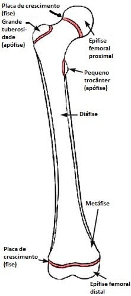
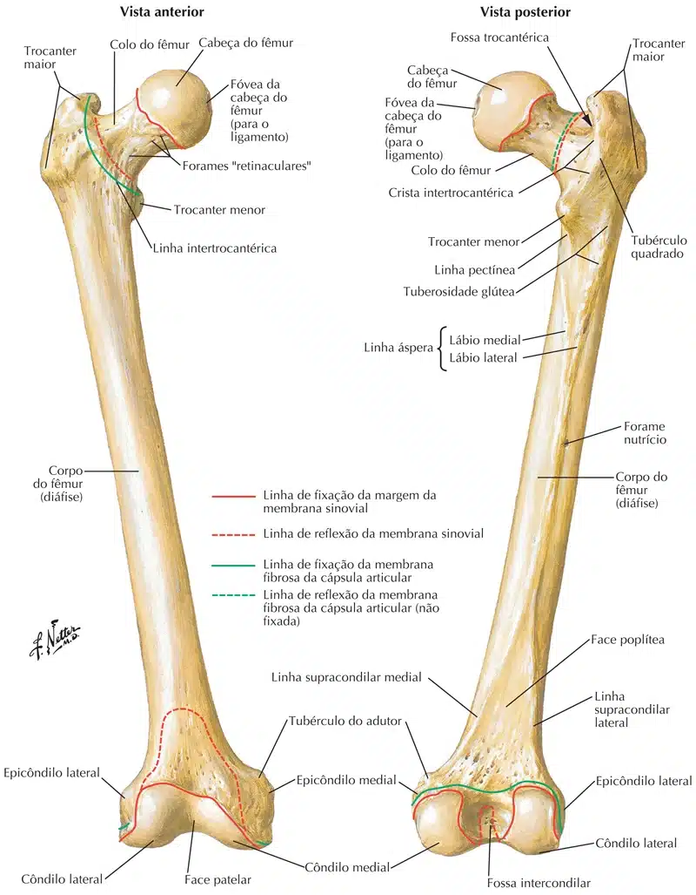

O maior osso do esqueleto é classificado como um osso longo, apresentando portanto duas epífises, proximal e distal, e um corpo / diáfise.
O fêmur articula-se pela sua extremidade proximal com o osso do quadril e pela extremidade distal com a tíbia.
Observe no esqueleto articulado que, em virtude das articulações dos quadris serem muito afastadas, devido à construção da pelve, os fêmures dirigem-se inferior, medial e anteriormente, convergindo para os joelhos e formando com as tíbias um ângulo obtuso.

Examine a extremidade proximal do fêmur e localize a cabeça do fêmur, esferóide.
Veja em um esqueleto articulado como ela se encaixa no acetábulo do osso do quadril.
A cabeça do fêmur apresenta uma pequena depressão, a fóvea da cabeça do fêmur onde se fixa um dos ligamentos da articulação do quadril, o ligamento da cabeça do fêmur.
A conexão da cabeça femoral com o corpo do osso faz-se pelo colo do fêmur: repare como ele se dirige superior, medial e um pouco anteriormente.
Na verdade, o colo do fêmur é um prolongamento do corpo do osso, tanto no seu desenvolvimento quanto na sua ossificação e estrutura.
Assim, no nascimento o colo é curto e espesso, alongando-se a medida que o osso se desenvolve.
Do mesmo modo, o ângulo que o eixo longitudinal do colo forma com o eixo longitudinal da diáfise, denominado ângulo de inclinação, varia com o crescimento do osso, sendo mais aberto nos jovens.

Uma diminuição acentuada deste ângulo resulta numa condição conhecida como coxa vara (quadril inclinado).
O aumento exagerado do ângulo de inclinação é conhecido como coxa valga.
Muitos vasos de pequeno calibre penetram no colo do fêmur e constituem a fonte mais importante de irrigação da cabeça do fêmur.
Nas fraturas do colo, e são bastante frequentes, estes vasos podem ser lesados, resultando eventualmente na necrose da cabeça do fêmur.
O exame cuidadoso do ponto de união do colo com o corpo do fêmur, em vista anterior, mostra uma linha saliente, a linha intertrocantérica, mascarada lateral e superiormente pela presença de uma grande massa óssea, o trocânter maior.
Vê-se, pois, que o trocânter maior está justaposto à base do colo do fêmur.
Observado pela face posterior, o trocânter maior, na sua parte mais superior recobre urna depressão profunda, a fossa trocantérica e está em conexão com uma projeção óssea menor e medial, o trocânter menor, através da crista intertrocantérica.
O corpo do fêmur (diáfise) tem uma secção de forma aproximadamente triangular no terço médio e, assim, apresenta as faces anterior, medial e lateral.
As faces medial e lateral, estão delimitadas, posteriormente pela linha áspera, que é bastante visível.
Observe a linha áspera no terço médio do corpo femural: note que ela é dupla, podendo-se distinguir um lábio medial e outro lateral.
No terço médio os lábios estão muito próximos mas nos terços proximal e distal eles tendem a divergirem.
No terço proximal ocorre uma bifurcação da linha áspera: o terço medial dirige-se para o trocânter menor e denomina-se linha pectínea; por sua vez o lábio lateral divergente é substituído por uma crista larga rugosa a qual recebe o nome de tuberosidade glútea.
No terço distal os lábios medial e lateral da linha áspera divergem, delimitando entre eles uma superfície triangular, a face poplítea.
As linhas divergentes recebem o nome de linhas supracondilares, medial e lateral.
Examine agora a epífise distal e repare como ela se expande em duas massas volumosas, os côndilos medial e lateral do fêmur.
Note que estão unidos anteriormente numa superfície lisa, a face patelar, para receber a patela.
O contato da patela com a face patelar dá-se quando a perna está totalmente fletida.
Vistos posteriormente, os côndilos do fêmur mostram-se separados pela fossa intercondilar.
Repare que na parte mais superior do côndilo medial apresenta-se uma projeção óssea denominada tubérculo adutor.
Observe na figura que ambos os côndilos apresentam pequena projeção nas suas superfícies não articulares, denominadas epicôndilos medial e lateral.